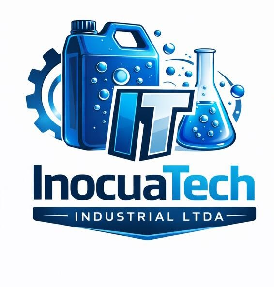
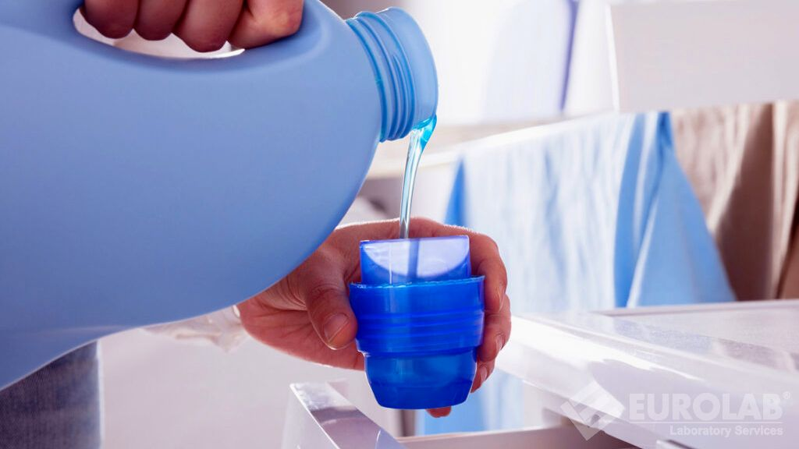
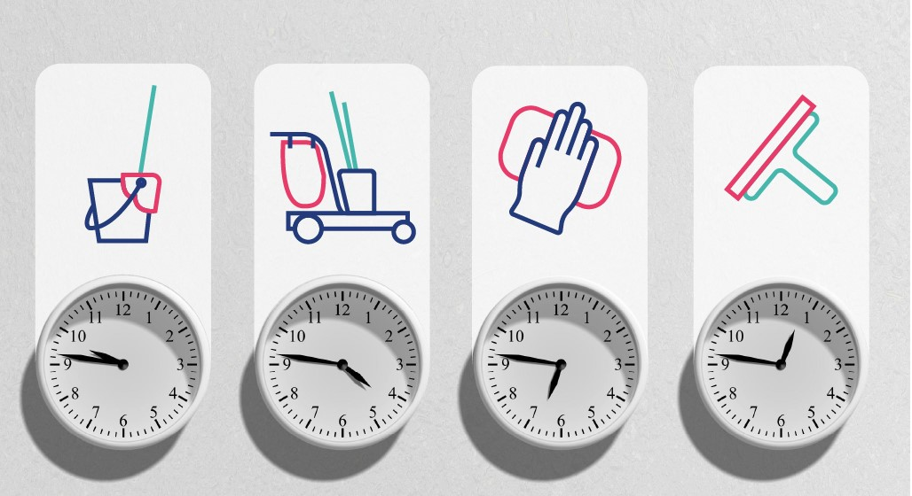

Soluciones integrales para optimizar procesos industriales de limpieza

Evaluamos tus procesos actuales y proponemos mejoras eficientes y sostenibles.

Reducción de costos operativos mediante mejores prácticas y productos adecuados.
Seguimiento continuo para asegurar resultados consistentes y medibles.
Combinamos tecnología, experiencia y compromiso para ofrecer soluciones que realmente impactan en la eficiencia operativa de nuestros clientes.